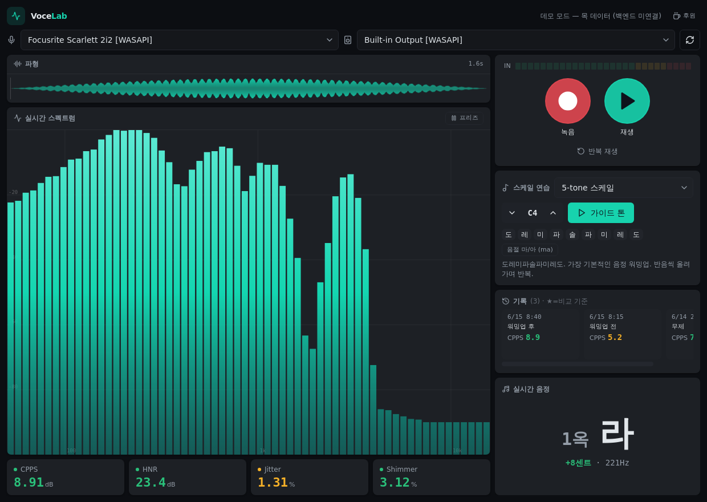

오디오 인터페이스로 녹음하고 바로 들어보며, 실시간 음정·스펙트럼과 Praat 기반 음향 지표(CPPS·HNR·지터·쉬머)로 보컬 연습을 분석하는 무료 데스크톱 앱입니다.

버튼 한 번으로 발성을 녹음하고 바로 들어봅니다. 파형을 클릭해 원하는 지점부터 재생.
지금 내는 소리의 음정을 한글(예: 2옥 도)과 센트로 실시간 표시. 재생할 땐 그 음정으로.
DAW EQ처럼 주파수별 막대 분석기. 프리즈로 멈춰 살펴보기.
CPPS·HNR·지터·쉬머를 Praat 엔진으로. 양호/주의/개선을 색으로 한눈에.
워밍업 스케일 17종 + 가이드 톤 + 키 트랜스포즈.
녹음마다 자동 저장. 워밍업 전/후를 델타로 비교.
.exe / macOS .app)
🔒 프라이버시: 녹음·기록은 내 컴퓨터에만 저장됩니다(~/.vocelab). 서버로 전송되지 않습니다.
VoceLab은 무료입니다. 개발에 커피 한 잔으로 응원해주세요.
Ko-fi에서 후원하기